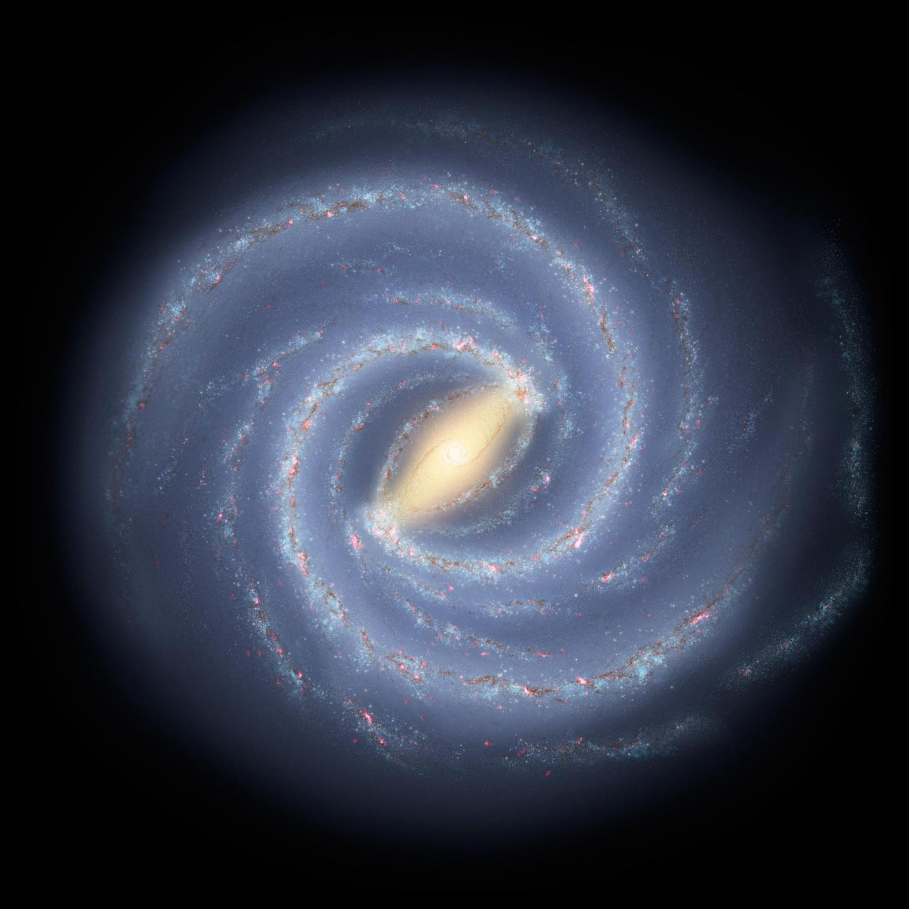

|  |
 |
Area 51 is a highly secretive U.S. military base located in the Nevada desert,
about 135
kilometers north of Las Vegas. Officially known as part of the Edwards Air Force Base, it has long been
associated with mysterious activities and conspiracy theories. Many people believe that the U.S.
government uses Area 51 to test experimental aircraft and advanced technologies, while others claim it
hides evidence of extraterrestrial life and UFOs. Although its existence was officially acknowledged by
the U.S. government in 2013, most details about what happens inside remain classified. The secrecy
surrounding Area 51 continues to fuel public curiosity and makes it one of the most intriguing places in
the world. |